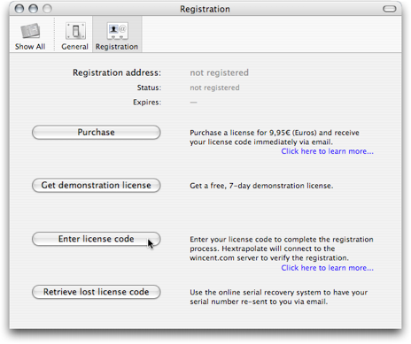

What to do if you lose your license code
If you lose your license code you can have it resent to you by an automated system.
It is recommended that you keep backups of your license notices.
- From the Hextrapolate menu select Register…
- When the registration preference pane appears, click the “Retrieve lost license code” button
Screenshots

Alternatives
If you unable to obtain your license using this method, contact me via email at support@wincent.com.